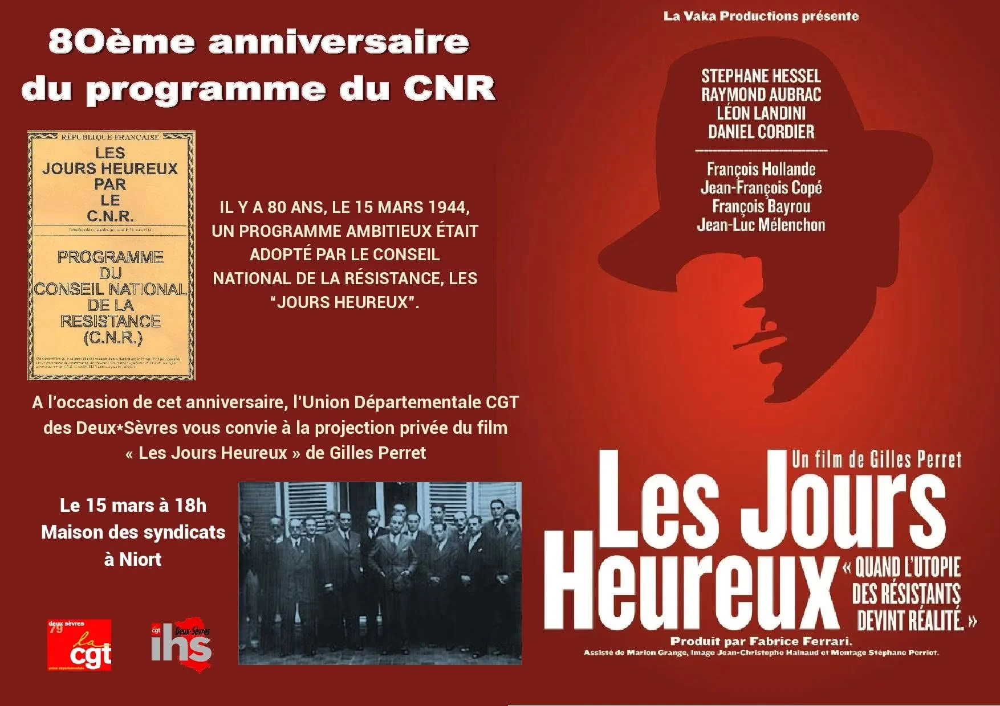

Publication relayée par le PCF 79
Les Jours heureux. Une projection et un débat annoncés à Niort
Date de mise à jour indiquée par Facebook · 12 mars 2024
Texte de la publication · CGT 79 Deux-Sèvres
Pour fêter les 80 ans du Conseil National de la Résistance, la CGT 79 invite tous ceux qui le souhaitent à une projection publique du film "Les Jours Heureux" (nom du programme du CNR) réalisé par Gilles Perret.
18h Vendredi 15 mars 2024
Projection du documentaire sur le programme du CNR "Les Jours Heureux"
Maison des syndicats
8 rue joseph Cugnot 79000 NIORT
La projection sera suivie d'un débat puis d'un verre de l'amitié.
Nous commémorions le 21 février dernier nos camarades qui ont perdu leurs vie à défendre la France, ces FTP-MOI (Francs Tireurs et Partisans - Main d'Oeuvre Immigrée) les Manouchian, les 23 de l'affiche rouge et tous les autres : beaucoup d'entre eux étrangers, apatrides, mais résistants à l'occupation Nazie.
Ces résistants ont aussi protégés un comité spécial pour la reconstruction de la France le Conseil National de la Résistance qui à produit le programme progressiste "Les Jours Heureux", ce programme c'est lui qui a permi la nationalisation des entreprises qui ont collaboré au régime nazi, mais aussi la nationalisation des banques pour que l'économie ne prenne pas le pas sur nos vies (ce qui est un risque aujourd'hui), la Sécurité Sociale (cet organe de protection sociale solidaire envié par tous les peuples et que notre gouvernement met à mal aujourd'hui) mais aussi la nationalisation des entreprises de l'énergie et des télécommunications ( dans EDF, GDF, La Poste, France Télécom, entreprise aujourd'hui re privatisées au nom de la concurence qui devait "faire baisser les prix", mais comme nous l'observons à eu un effet contraire)
Nous voulons le retour de la régulation de la finance, de l'énergie, des télécoms et bien évidemment une sécurité sociale encore plus protectrice.
Ce qu'il était possible de créer dans une France en ruine, il est possible de le faire de meilleure manière dans la France d'aujourd'hui. Venez observer le programme de nos aînés dans le CNR pour proposer de nouveau demain les jours heureux, plutôt que le libéralisme ou l'extrême droite que certains veulent nous promettre.
A très bientôt pour cette soirée et dans les luttes !
Notamment le 19 mars pour l'augmentation des salaires des fonctionnaires à Niort 11h place de la Brèche ou à Thouars 11h place Flandres Dunkerque
et ou le 26 mars pour les pensions de retraites à 10h30 devant la préfecture des Deux Sèvres à Niort
Le Secrétariat d'UD CGT 79
Repères éditoriaux
L’affiche et le texte de la CGT 79 annoncent la projection le vendredi 15 mars 2024 à 18 h, à la Maison des syndicats de Niort. Un débat devait suivre le documentaire de Gilles Perret sur le programme du Conseil national de la Résistance.

Sources
CGT 79 Deux-Sèvres · publication relayée par le PCF 79 · bibliothèque Facebook · AR-0002-FB-01450
À lire aussi · L'élan de la Libération de Paris · Le lien d’origine